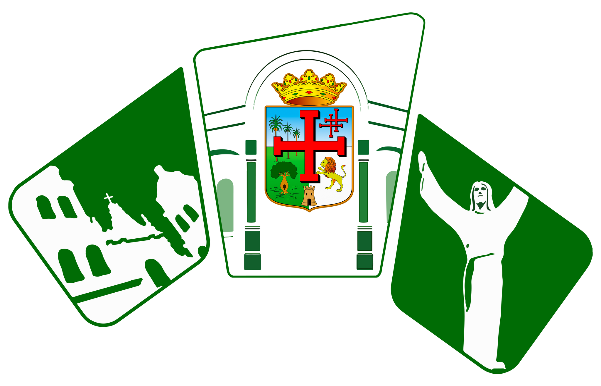

|
|
1. Dicho: "En Santa Cruz, todos son parientes."
|
Bajo el cielo más puro de América
Y en la tierra de Ñuflo de Chávez
Libertad van trinando las aves
De sureste ostentando el primor
|
|
2. Dicho: "En Santa Cruz, Elay pj perrito."
|
De las flores del mundo galano
Su ambrosía perfumada ofreciendo
|
3. Costumbre: La fiesta de San Juan
|
|
Libertad, libertad van diciendo
En efluvios de paz y de amor
|
4. Dicho: "En Santa Cruz, cada día es una fiesta." |

|